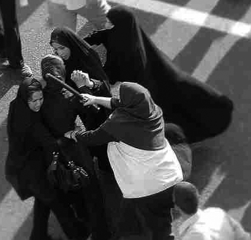

پذيرش > سایت نوشته ها > حکومت ایران از زنان مي ترسد
 گزارشي از ایل جورناله گزارشي از ایل جورناله

 حکومت ایران از زنان مي ترسد حکومت ایران از زنان مي ترسد
22 بهمن 1387 - روزآنلاین / ستنیو سولیناس - نسخه قابل چاپ
زنان را در همه جاي ایران مي شود دید: در اتوبوس، پشت فرمان، در پیاده رو یا در پارک، در مغازه ها، رستوران ها، اداره ها و دانشگاه ها. آنها روسري هاي رنگي به سر مي کنند و موهاي لخت یا مجعد شان را از پشت روسري بیرون مي گذارند و یک دسته مو هم از جلوي روسري بیرون زده است؛ مانتو و پالتو هاي خوش دوخت مي پوشند که اندام باریک شان را نشان مي دهد؛ چکمه و نیم چکمه و یا کفش کتاني که تازه مد شده است به پا مي کنند. ناخن هایشان را لاک مي زنند و آرایش ملایمي دارند و بعضي از آنها به نشانه اینکه بیني شان را جراحي کرده اند، چسیي روي دماغشان زده اند.
آنها بعضي وقت ها تنها هستند یا همراهي دارند، این همراه ممکن است دوسشان باشد یا دوست پسرشان یا نامزدشان که دستش را در دست گرفته اند. به آنها بد حجاب مي گویند چون مطابق به قوانین سختگیرانه حجاب که مطابق با آن باید مقتعه با چادر سیاه یا مانتو و روسري بزرگ و تیره بپوشند، عمل نمي کنند و اگر نگوییم در اکثریت هستند باید گفت که اقلیت بزرگي محسوب مي شوند.جوانان در کشوري که 70 درصد جمعیت آن زیر سي سال هستند، نیمي از افراد راي دهنده را تشکیل مي دهند و تعدادشان تقریبا سي میلیون نفر است که بیش از 60 درصدشان را زنان و دانشجویان تشکیل مي دهند. سه چهارم افرادي که در این روزها سي امین سالگرد فرار شرم آور شاه و بازگشت پیروزمندانه حمیني را جشن مي گیرند، زماني که در ایران انقلاب شد، هنوز بدنیا نیامده بودند.
این یک پارادوکس است اما در ایران همه به پارادوکس ها عادت کرده اند. آنها درست در وسط دنیاي عرب، به یک زبان هند اروپائي صحبت مي کنند و یک کشور یکپارچه محسوب مي شوند، اما نیمي از ایران را اقوام مختلف تشکیل مي دهند: آذري ها، کرد ها، ترکمن ها، گیلک ها، بلوچ ها. بسیاري از آثار معماري شگفت انگیز اسلامي جهان در ایران است، هنرهاي دستي، فرش و حتي با وجود فرهنگ شهرنشیني ظریف، پایتخت ایران ساختمان هاي سیماني زشت دارد، ترافیک آن وحشتناک است و هوایش به شدت به شدت آلوده. میراث ادبي ایران فردوسي و خیام هستند که در شعر هایشان از شوق به زندگي، زیبایي و شراب، گل و عشق گفته اند و حالا باید در کنار مذهب شیعه قرار بگیرند که ایده اصلي آن شهادت طلبي، خیانت و تبعیض است. ایران، قرن ها کشوري سلطنتي بوده است و حالا جمهوري اسلامي است که قانون آن قانون شرع است اما در نماز جمعه فقط دو درصد جمعیت کشور شرکت مي کنند.
اگر به این پارادوکس ها سهل انگاري ها و فقدان اطلاعات و حماقت را بیافزایید، تابلویي که در پیش رو دارید باز هم پیچیده تر مي شود. بعنوان مثال، در نظر بگیرید که ایران شیعه با اقوام مختلفي که در آن زندگي مي کنند، بخواهد رهبري جهان عرب که سني است را بعهده بگیرد.
یک مثال دیگر، ایران یهودي ستیز کشوري است که بیشترین تعداد یهودیان خاورمیانه، بعد از اسرائیل، در آن زندگي مي کنند، تعداد یهودیان ایران در حدود سي هزار نفر است و در مجلس ایران نماینده دارند. مثالي دیگر، با نگاه به حکومت طالبان و صدامیون و خمینیست ها، ایران از لحاظ سیاسي از سایر کشور هاي عرب با ثبات تر است و این کشور حملات یازده سپتامبر را محکوم کرد و با احساس بیشتري به قربانبان آن براز همدردي کرد و در افغانستان هم با ائتلاف شمال همکاري کرد که همینن موضوع قدمي بود در راه دموکراتیک شدن افغانستان. اگر بخواهیم بیشتر در مورد پارادوکس ها و پیشداوري ها در ایران صحبت کنیم، بهتر است به موضوع شیرین عبادي بپردازیم: او وکیل ایراني و برنده جایزه صلح نوبل است؛ در زماني که قرار بود کتاب خاطراتش به زبان انگلیسي چاپ بشود، متوجه شد که تولیدات فرهنگي هم شامل تحریم هاي آمریکا است، بنابر این محدودیتي که در ایران براي او وجود داشت، در آمریکا هم به همان اندازه معتبر بود. این محدودیت به لطف شکایت خود شیرین عبادي، برداشته شد. این را هم باید گفت که بر سر در سازمان ملل در نیویورک این شعر از گلستان سعدي، شاعر ایراني، نقش بسته است:« بنى آدم اعضاء يک پیکرند/ که در آفرينش ز يک گوهرند/ چو عضوى بدرد آورد روزگار/ دگر عضوها را نماند قرار».
سفر به ایران مثل حرکت مارپیچ و گذشتن از میان پارادوکس ها و پیشداوري هاست که باعث مي شود شناخت عمیق تري از این کشور بدست بیاوریم. در سفر به ایران به این نتیجه مي رسیم که شیرین عبادي در گفتن این نکته اشتباه نکرده است:« جمهوري اسلامي براي خودش یک گروه مخالف درست کرده است که این گروه، زنان تحصیلکرده و آگاه هستند که براي بدست آوردن حقوق خود، مبارزه مي کنند. این زنان هستند که اگر موقعیتي بدست بیاورند مبارزه شان را آغاز مي کنند و بدون اینکه براندازي صورت بگیرد، کشورشان را تغییر مي دهند». بعد از گذشت سي سال از انقلاب اسلامي در ایران، زنان ایراني این تفکر مذهبي و سنتي را از بین برده اند که طبق آن نقش زنان فقط در درون خانواده است. تحرک فزاینده اجتماعي زنان، ورود به بازار کار، درصد بالاي فارغ التحصیلان زن، مسلما نه تنها اجتماع و زندگي زنان را تغییر داده است بلکه بر حکومت و مذهب هم تاثیر گذاشته است. با این وجود عوامل پر قدرت تبعیض آمیز همچنان بر حقوق عمومي و خصوصي زنان سایه افکنده است بعنوان مثال ارزش زنان بعنوان شاهد، و وارث نصف مردان است و در هنگام طلاق، زنان قربانبان اصلي هستند.
اگر به این موارد این را بیافزاییم که در هر انتخاباتي که در ایران برگزار مي شود، سن راي دهندگان پایین مي آید و قسمتي از بدنه حکومت فرو مي ریزد و مي شود فهمید که چرا ایران مثل یک بوته ازمایش هر لحظه دستخوش تغییر است. بین سال هاي 97 تا 2005، شاهد ریاست جمهوري خاتمي اصلاح طلب بودیم که بعد از او احمدي نژاد تندرو بر سر کار آمد. با وجود تفاوت هاي زیادي که بین این دو نفر وجود دارد، یک نکته مشترک است و آن این است که در نهایت تصمیم گیرنده اصلي، ولي فقیه است که امروز بعد از فوت آیت الله خمیني، به آیت الله خامنه اي رسیده است. بعد از ناکامي هاي سیاسي خاتمي، احمدي نژاد رئیس جمهور شد که شاید یکي از دلایل موفقیتش این بود که غیر روحاني است، اگر چه نقش سیاسي اش یا یک ملا تفاوتي ندارد.
با وجود اینکه احمدي نژاد توانست در رقابت ریاست جمهوري پیروز شود، اما با یک بحران جدي روبرو است: بحران اقتصادي که یا نمي داند و یا نمي تواند با آن مبارزه کند، اخلاقي کردن جامعه که نتیجه واقعي ندارد، عقیدتي کردن جامعه که به سود منافع ملي نیست. فرضیه کاندیدا شدن مجدد خاتمي براي انتخابات ریاست جمهوري ماه ژوئن قوي تر شده است و اگر چنین باشد، او رئیس جمهور ایران است. جامعه ایران دریافته است که تحریم انتخابات به سودش نیست، در یک بدنه اجتماعي که به دنبال راهي براي مدرن شدن مي گردد، جنبش هاي رادیکال جایي ندارند و تنها راه رسیدن به آن اصلاحات است.
منبع: ایل جورناله 4 فوریه
روزآنلاین
ارسال به
بالاترین
،
توییتر
،
فریندفید
،
فیسبوک
در همين بخش :
 یک خبر تلخ؟ یک قانونشکنی؟ یک تصمیم بخشنامهای جدید؟ یک خبر تلخ؟ یک قانونشکنی؟ یک تصمیم بخشنامهای جدید؟
چرا بایست به سکسوالیته پرداخت؟ / نفیسه آزاد
آزارجنسی خانگی؛ «قربانی» نه، «نجات یافته»
زنان، بزرگترین بازندگان بهار عرب
سانسور از دیدگاه جنسیتی/الهه امانی
ديگر بخش ها :
طرح یک میلیون امضا
|
مقالات
|
سایت نوشته ها
|
اخبار
|
گزارش كمپين
|
گفت و گو
|
علیه سکوت
|
كوچه به كوچه
|
نامه های شما
|
گزارش ویژه
|
گفتگو با اعضا
|
ویژه سالگرد کمپین
|
تصویر برابری
|
دل آرام علی
|
تریبون
|
مقالات
|
تاریخ شفاهی
|
خارج از چارچوب
|
کتابخانه
|
درباره کمپین
|
کمپین در شهرها
|
کمپین در بند
|
صدای تغییر
|
ویژه 22 خرداد
|
لایحه حمایت از خانواده
|
گالری
|
عشا مومنی
|
امیر یعقوبعلی
|
خدیجه مقدم
|
راحله عسگری زاده و نسیم خسروی
|
پروین اردلان،جلوه جواهری، مریم حسین خواه، ناهید کشاورز
|
زینب پیغمبرزاده
|
سعیده امین، سارا ایمانیان، محبوبه حسین زاده، ناهید کشاورز و همایون نامی
|
احترام شادفر
|
نسیم سرابندی زاده،فاطمه دهدشتی
|
وبلاگ مهمان
|
پرونده خرم آباد
|
دستگیری ها
|
مریم مالک
|
پرستو اللهیاری
|
مهرنوش اعتمادی
|
سمیه رشیدی
|
Other Languages
|
همراهان
|
«فراخوان کمپین ده روز با بهاره هدایت»
| English
|